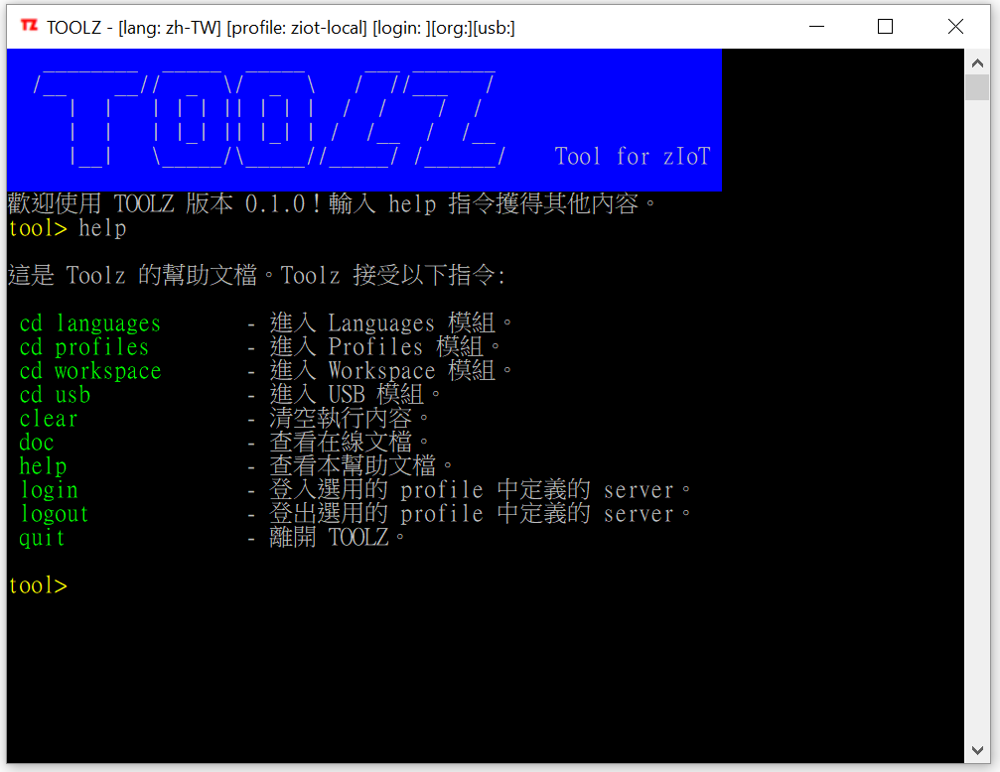
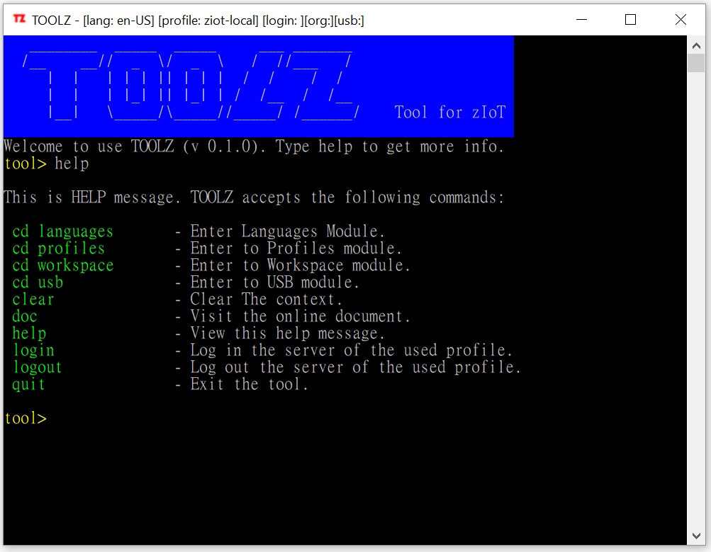
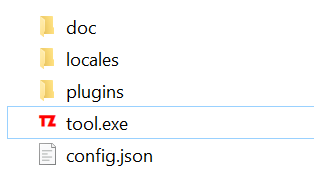

Toolz
2019-11-19
toolz 是一個支援 ZIOT 項目的小工具。作用是提供一個統一的工具來開發，測試，安裝及設定項目中使用的 Basebox 程式。 toolz 是一個交互式的執行環境，類似於 REPL (Read-Eval-Print Loop)。 1 2 3
________ _____ _____ ___ _______
/__ __// _ \/ _ \ / //___ /
| | | | | || | | | / / / /
| | | |_| || |_| | / /__ / /__
|__| \_____/\_____//_____/ /______/ Tool for ZIOT
Features
介面支援多語言
 
支援在線檢查更新
toolz 可以在線去指定網庫尋找有沒有更新的版本可下載。
支援自定義預設指令 (Preset Command)
預設指令 (Preset Command) 與 toolz 的命令是不同的東西。預設指令的基本作用就是用簡單名稱來定義一些在 Basebox 上執行的小腳本。所以預設指令是在 usb 模組下運作。
Installation
安裝前提 - PowerShell
- PowerShell:
toolz是以PowerShell開發的。對PowerShell版本要求在 5.1 或以上。 - 可以執行代碼
powershell $PSVersionTable.PSVersion檢查PowerShell版本。
安裝前提 - USB Driver
完成前提的檢查後，安裝 toolz 只要把 TOOLZ.zip 檔解壓 (unzip) 後即完成。 打開 toolz 的目錄，會看到以下的目錄及檔案名稱。
toolz\
├ doc\
├ locales\
├ plugins\
├ tool.exe
├ config.json
